CabañaTierra
Living amplio con cocina integrada y mesa para todos. Telares en cada rincón.
Huacalera · JujuyA 300 m del Trópico de Capricornio
Cabañas nuevas con los cerros enfrente, a una cuadra del Trópico. Lili y Luis te atienden en persona.
Tierra Agua Fuego Aire
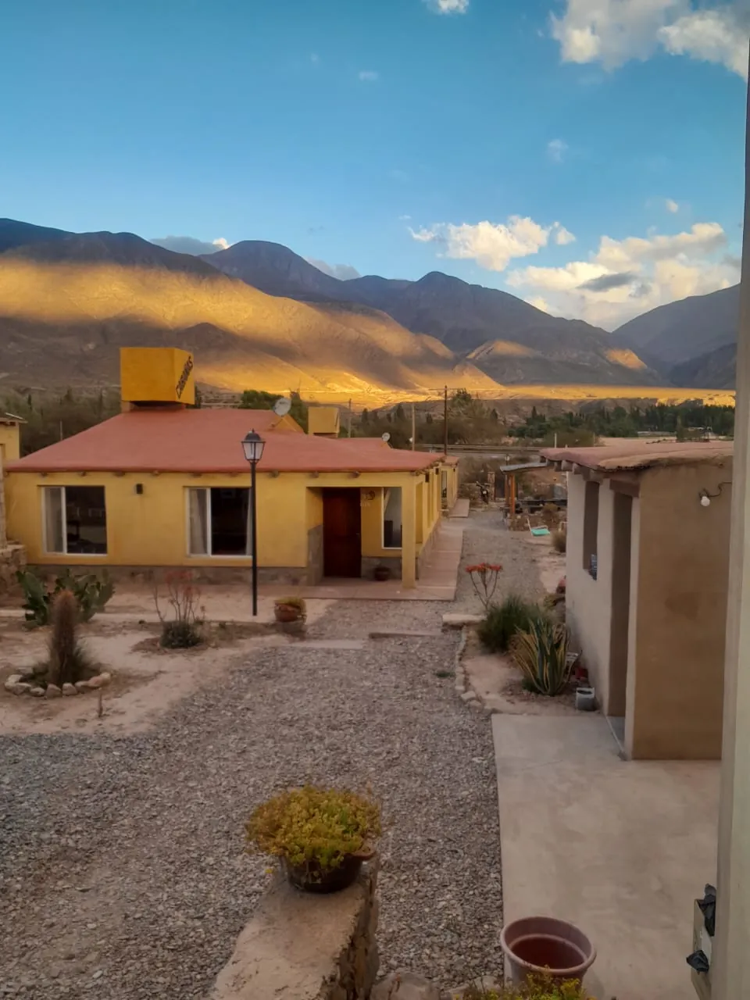
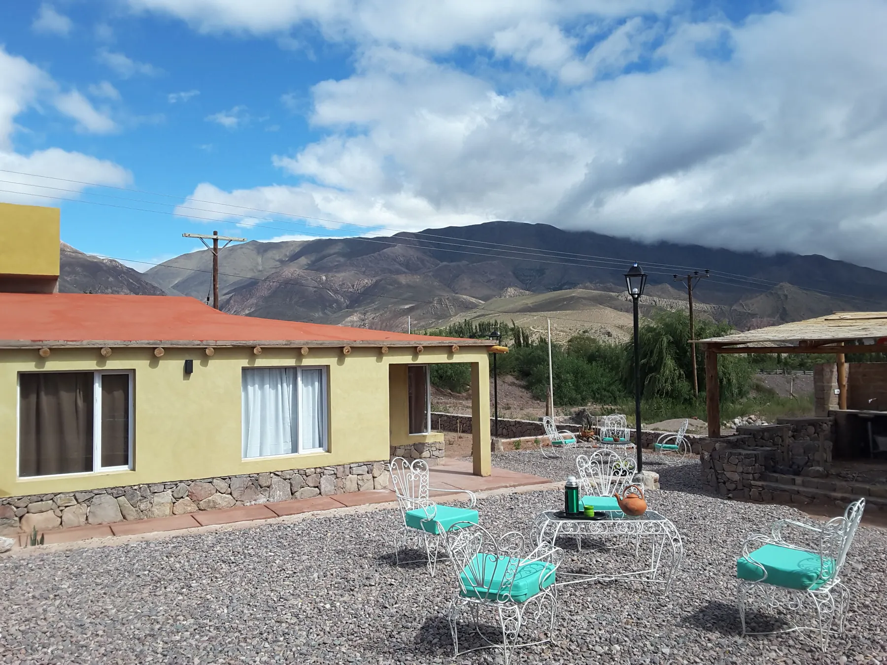
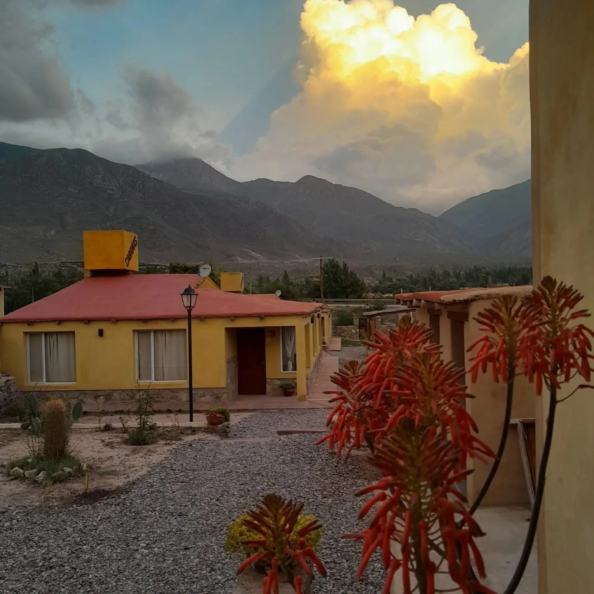
Las cabañas
Cada cabaña lleva el nombre de un elemento. Todas son nuevas, amplias y equipadas, con techos de vigas, piedra y telares de la zona. Tocá una foto para verla grande.
Living amplio con cocina integrada y mesa para todos. Telares en cada rincón.
Dormitorio con cabecera de piedra y el sol de la mañana entrando por la ventana.
Manta de colores, pared de piedra y ventana al patio y a los cerros.
Living luminoso con sillones rojos y la pared amarilla de la cocina.
Adentro y afuera
Totalmente equipadas para una estadía autónoma: llegás, dejás el bolso y salís a recorrer.
Anafe, frigobar, vajilla completa y una mesa grande para comer todos juntos.
Techos de vigas, cabeceras de piedra, calefacción y ropa blanca incluida.
Sillones, Wi-Fi y TV. Telares de la zona en cada ambiente.
Mesa afuera para el mate de la tarde, mirando los colores de la Quebrada.
Bajo la caña, con mesa de piedra: para hacer tu asado a la vista del cerro.
El desayuno de Lili, de 8 a 10 h y con reserva previa.
Gratis y dentro del complejo, junto al cardón de piedra de la entrada.
Lo que dicen
“Excelente estadía y cabañas muy cómodas, amplias y nuevas. Y lo mejor de todo es la esmerada atención de sus dueños, que siempre están en cada detalle.”
“Estar en Huacalera ya es una estadía de belleza por los cuatro puntos cardinales. Está a quince minutos de Tilcara. Las cabañas están muy lindas y cómodas, con vista a esas montañas.”
Atendido por sus dueños
Lo que más repiten los huéspedes no es la vista: es el trato. Lili te recibe a la mañana con el desayuno; Luis se encarga del fuego a la noche.
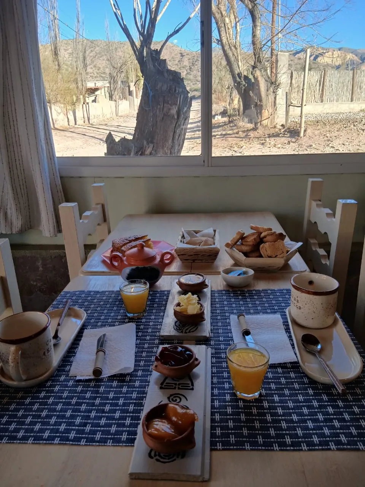
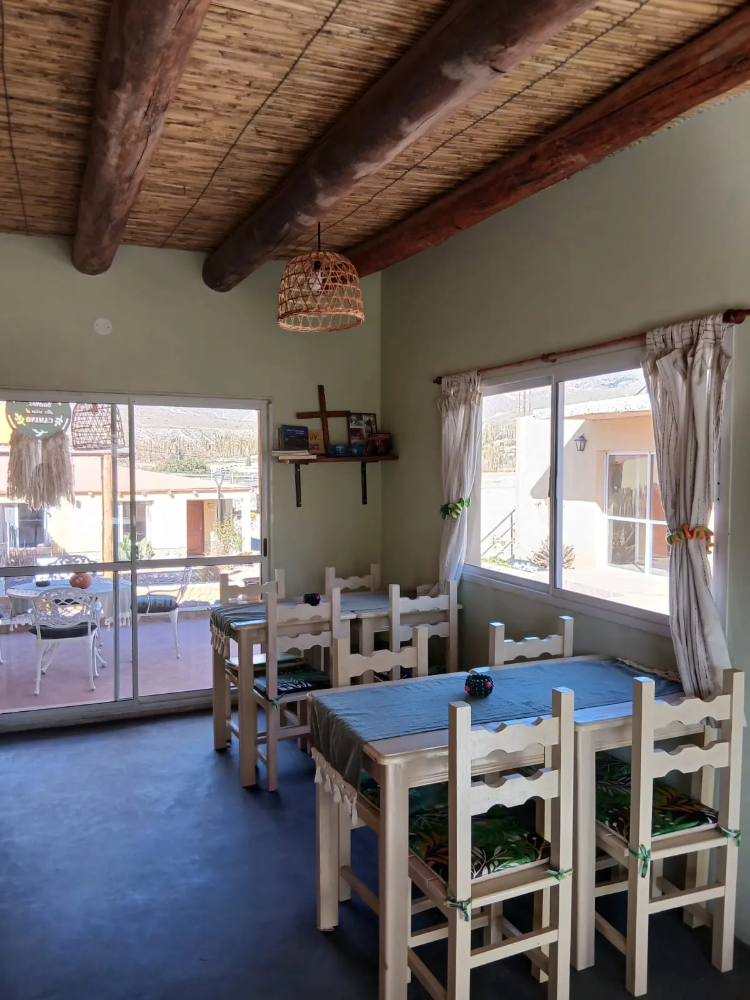
A la mañana · Lili
En el salón desayunador, con vista al patio: pan casero tostado, dulces en cazuelitas de barro, manteca, jugo y café con leche en tazas de cerámica.
De 8 a 10 h · previa reserva
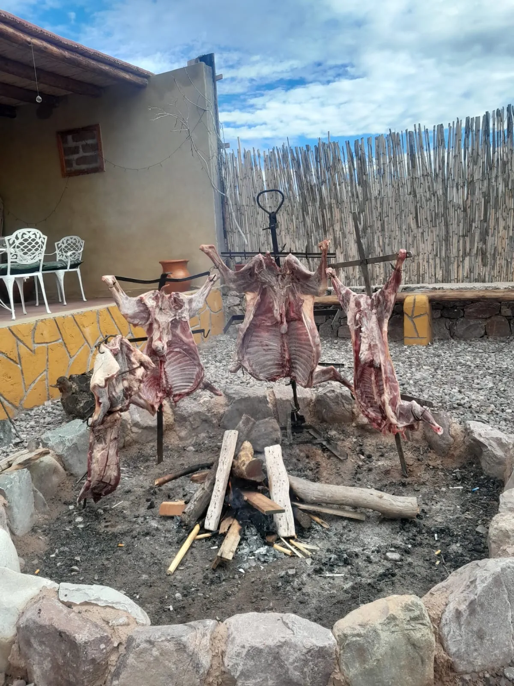
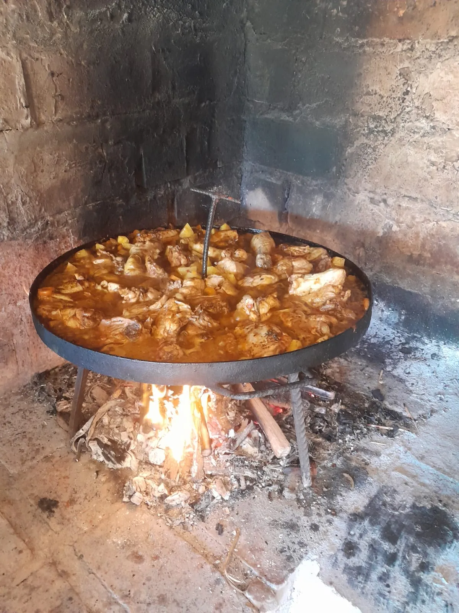
A la noche · Luis
Luis es el que cocina, y su especialidad se hace despacio y a la vista: el asado a la estaca, junto a la pérgola con parrillas.
Consultá el menú y los días de asado cuando reserves.
Scrolleá despacio: estás por ver un día entero del 21 de diciembre, a 300 metros de las cabañas.
Ese cardón hace de aguja de reloj de sol. Mirá cómo su sombra se va acortando a medida que el sol trepa.
Huacalera está sobre el Trópico de Capricornio: el mediodía del solsticio, el sol se para justo encima tuyo. Es de los pocos lugares del país donde pasa, y el monumento está a una cuadra de las cabañas.
La sombra vuelve, del otro lado. Es la hora de la galería, el mate y los colores de la Quebrada cambiando enfrente.
Por detrás del cerro, con un cielo que en la ciudad no existe. Lili la filma desde el patio casi todas las semanas.
En video
El reloj del Trópico visto desde el dron, las cabañas por dentro y el complejo cuando cae la noche. Con sonido: tocá para reproducir.
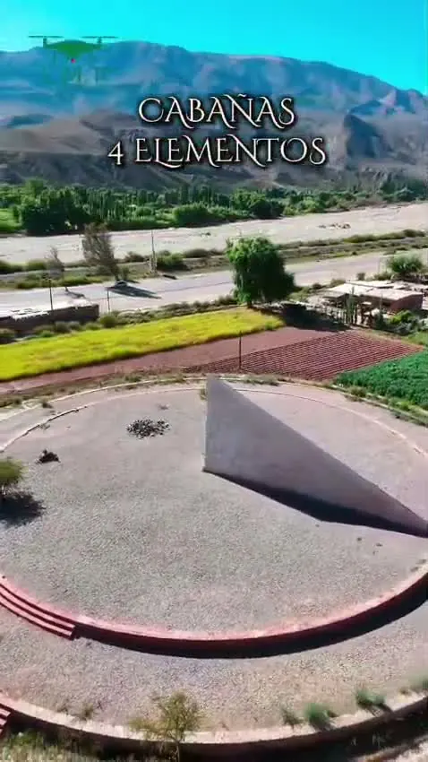
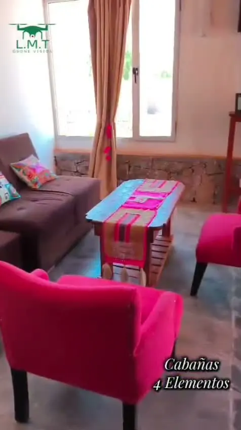
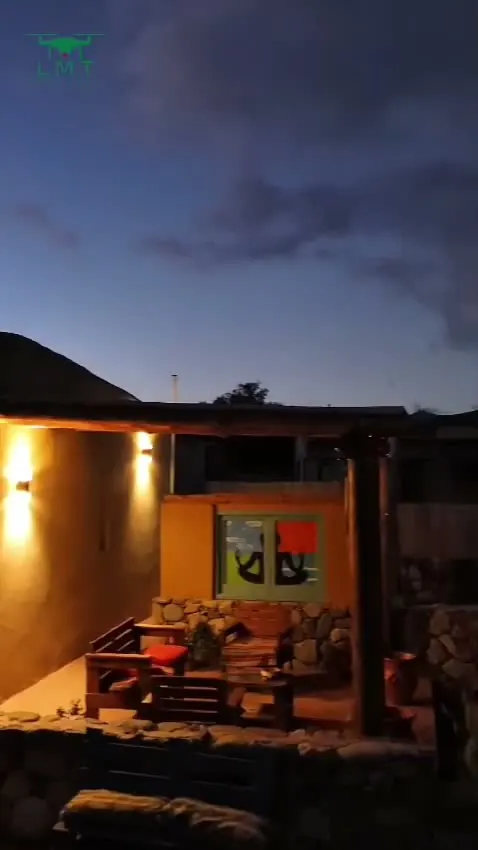
El complejo
Patio de ripio, cardones, galerías y pérgolas de caña. Tocá una foto para verla grande.
Ruta Nacional 9
Huacalera queda justo en el medio de la Quebrada: lejos del ruido de Tilcara, cerca de todo lo que viniste a ver.
Promo de temporada
Vigente este mes
Te quedás tres noches y pagás dos, en mayo, junio y de septiembre a diciembre.
No aplica en feriados ni fines de semana largos.
Aprovechar la promoReservas
Buscá tus fechas, elegí la cabaña según cuántos son y dejá la reserva hecha en un minuto. Sin esperar que te contesten un mensaje.
Cómo llegar
Barrio San Lorenzo, Huacalera. A 400 metros del centro del pueblo y a 15 minutos en auto de Tilcara.
Barrio San Lorenzo · Huacalera
Recepción de huéspedes
Antes de venir
Son cuatro cabañas: para 2, 3, 4 y hasta 5 personas. Sirven para parejas, familias o grupos de amigos que quieren alquilar el complejo entero.
A 300 metros: se va caminando. Ahí está el monumento con el reloj de sol que marca el paso del trópico por la Quebrada.
Cada cabaña tiene cocina equipada, y en el patio hay una pérgola con parrillas para tu asado. Luis cocina, y su especialidad es el asado a la estaca: preguntá el menú cuando reserves.
Sí, en el salón desayunador, de 8 a 10 h y con reserva previa. Avisale a Lili el día anterior.
Huacalera está a más de 2.600 metros: las noches de invierno bajan de cero. Las cabañas tienen calefacción; si sos friolento, avisale a Lili y te deja mantas de más.
Desde el buscador de esta página, o escribiéndole a Lili por WhatsApp al 388 518-6442.
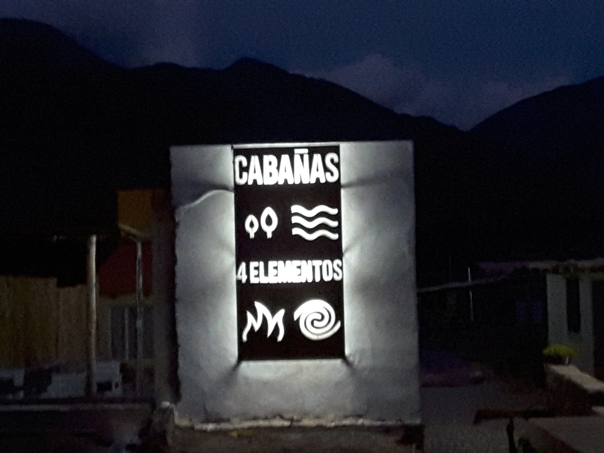
Huacalera · Quebrada de Humahuaca
Elegí tus fechas o escribile a Lili: ella te dice qué cabaña te conviene y cómo armar tus días en la Quebrada.